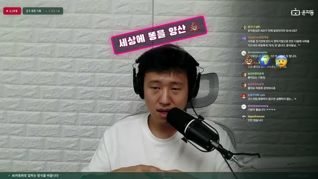

AI 도구를 공부하지 마세요

원본 영상 보기 →
- 툴 공부는 최소화, 아웃풋이 먼저예요
- 자동화로 돈을 벌 수 있어도, 방향은 본인이 정해야 해요
- 보안이 AI 도입의 진짜 병목일 수 있어요
한 줄 요약
AX(AI 전환) 자동화 전문가 윤자동이 유튜브 라이브 Q&A에서 "AI 툴 공부에 매몰되지 말고 일단 써서 아웃풋부터 만들라"고 조언해요. 라이브 방송 운영 방식과 법인 재정 철학, 채널 운영 원칙, 컨설팅 가격까지 솔직하게 풀어놓았습니다.
전체 내용 정리
스킬·훅 몰라도 돼요 — AI에게 필요할 때 물어보면서 배우면 충분합니다
개발자가 아닌 실무자라면 에이전트·스킬·훅·MCP·플러그인 같은 기능을 먼저 공부할 필요가 없다는 게 핵심 메시지예요.
최근 클로드 코드, 코덱스, 오르카, 파세오 같은 툴이 쏟아지면서 많은 사람들이 뭔지도, 어디에 써야 할지도 모른 채 무작정 공부부터 합니다. 그리고 다 배우고 나면 또 새 툴이 나와서 다시 처음부터 공부하는 패턴에 빠져 있다고 지적해요.
정작 중요한 것은 툴로 원하는 결과물을 만들어내는 것인데요. 결과물보다 툴 공부 자체에 집중하는 사람이 많다는 게 문제라는 거죠.
그래서 추천하는 방법은 공부를 아예 최소화하고, 일단 클로드 코드나 코덱스에 원하는 아웃풋을 만들어달라고 바로 시키는 겁니다.
반복되는 요청이 생기면 이렇게 되물어보세요. "어제 한 말을 오늘 또 해야 해서 힘들다, 반복하기 싫은데 방법이 없냐." 그러면 AI가 "그럴 땐 스킬을 만들면 명령어로 반복 작업을 쉽게 시킬 수 있다"고 알려줘요. 필요할 때 개념을 배우는 방식이죠.
마찬가지로 AI가 엉뚱한 결과를 내는데 감지하지 못하는 문제가 있다면, "이런 걸 자동으로 감지해서 막아주는 자동화가 필요하다"고 물으면 훅이라는 개념을 그때 배우면 충분하다고 설명합니다.
다만 개발자라면 이런 기능들을 다양하게 공부해서 쓰는 게 맞다는 단서도 함께 달았어요.
매주 목요일 저녁 8시 라이브, 앞으로는 게스트 전문가 중심으로 확장
윤자동은 매주 목요일 저녁 8시에 유튜브 라이브를 진행하고 있다고 밝혔어요.
지금까지는 혼자 진행해왔지만, 혼자서 전달할 수 있는 지식에는 한계가 있고 본인도 사업을 병행하다 보니 기술 트렌드를 다 따라가지 못하는 부분이 있다고 인정했습니다.
그래서 앞으로는 자신보다 특정 분야에 더 뛰어난 전문가들을 섭외해 게스트로 초청하는 방식으로 라이브를 확장할 계획이라고 하네요.
법인 통장보다 법인 성장에 집중 — "윤자동 4옥"이 목표
계좌에 얼마가 있냐는 질문에 윤자동은 개인 통장을 본 지 오래돼서 잘 모르겠다고 답했어요.
현재는 법인 형태로 운영 중입니다(원래 개인사업자였다가 올해 초 법인 전환했다고 해요). 개인 자산을 쌓기보다는 법인을 키우는 데 집중하고 있다고 밝혔습니다.
법인으로 자금을 모아 "윤자동 4옥"이라는 건물을 짓는 것이 목표라고 하는데요. 건물이 완성되면 그곳에서 구독자들을 초청해 여러 이벤트를 열고 싶다는 포부도 전했어요.
공기업·공공기관 강의 다수 진행 — 임원들은 성능보다 보안에 더 관심
기업 강의 외에 공기업·공공기관 강의와 교육도 다수 진행했다고 밝혔습니다. 경기도청, 시청, 재단 등 여러 공공기관에서 강의한 경험이 있다고 언급했어요.
공공기관 임원들의 AX(AI 전환) 도입 성향에 대해서는 자세한 통계까지는 파악하지 못했다면서도, 전반적으로 AI 성능보다 보안 이슈에 관심이 더 많다는 인상을 받았다고 답했습니다.
왜 윤자동은 유튜브 채널 하나만 운영할까요 — 자동화로 돈은 벌 수 있지만 하지 않는 이유
윤자동은 유튜브 외에 블로그, 인스타그램 등 다른 채널은 전혀 운영하지 않는다고 밝혔어요.
과거 윤자동 유튜브를 시작하기 전 블로그 자동화와 유튜브 자동화를 시도해본 적이 있고, 실제로 자동화 자체는 꽤 잘 됐다고 합니다. 워드프레스 블로그를 만들고 구글 애드센스로 광고 수익화까지 해봤다고요.
하지만 가장 큰 문제는 "너무 재미가 없었다"는 것이었어요. 세상에 가치를 만든다기보다 콘텐츠를 그냥 양산하는 느낌이 들었고, 자녀들에게 "아빠가 이런 일로 돈을 번다"고 당당히 말할 수 있을지 자문했을 때 답이 아니었다고 털어놨습니다.
이런 이유로 자동화 수익화 강의도 따로 팔지 않는다고 밝혔는데요. 짧은 강의를 듣는다고 해서 다른 사람이 실제로 돈을 많이 벌 수 있을 거라 생각하지도 않기 때문이라고 덧붙였어요.
AX 컨설팅·자동화 개발 가격 공개 — 방문 컨설팅 하루 550만 원(부가세 포함)
기업 컨설팅과 자동화 개발도 함께 진행하고 있다고 밝혔습니다.
작은 규모의 자동화 솔루션은 몇백만 원 선에서 제작해주는 경우도 있다고 해요. 직접 방문해서 진행하는 AX 컨설팅의 경우 하루 방문에 500만 원, 부가세 포함 550만 원을 받는다고 가격을 공개했습니다.
핵심 인사이트
- 툴 공부는 최소화, 아웃풋이 먼저예요: 새 AI 툴이 나올 때마다 처음부터 공부하는 악순환에 빠지기보다, 일단 원하는 결과물을 만들어달라고 시키고 막히는 지점에서만 필요한 개념(스킬, 훅 등)을 그때그때 배우는 편이 실무자에게는 훨씬 효율적입니다.
- 자동화로 돈을 벌 수 있어도, 방향은 본인이 정해야 해요: 자동화 능력만으로 수익화가 되는 건 아니죠. 윤자동은 블로그·인스타 자동화 수익화가 가능하다는 걸 알면서도, 콘텐츠 양산이 재미없고 떳떳하지 않다는 이유로 하지 않기로 선택했습니다. 자동화 도입 여부는 능력이 아니라 가치관의 문제일 수 있어요.
- 보안이 AI 도입의 진짜 병목일 수 있어요: 공공기관·기업 임원들이 AI 성능보다 보안에 더 관심을 갖는다는 현장 경험은, AX 도입을 준비하는 조직이라면 성능 최적화 이전에 보안 요건부터 점검해야 한다는 신호입니다.
오늘 당장 해볼 것
- 새 AI 툴 튜토리얼을 찾아보기 전에, 클로드 코드나 코덱스를 열고 지금 필요한 결과물부터 바로 요청해보세요(예: "이 보고서 초안 만들어줘").
- 같은 요청을 반복하고 있다면 AI에게 직접 "이 반복 작업, 매번 다시 말 안 해도 되게 만들 수 있어?"라고 물어보고 나오는 제안을 따라가보세요.
- 매주 목요일 저녁 8시 윤자동 유튜브 라이브에 들어가서 실제 AX 컨설팅·자동화 사례를 참고해보시는 것도 좋아요.